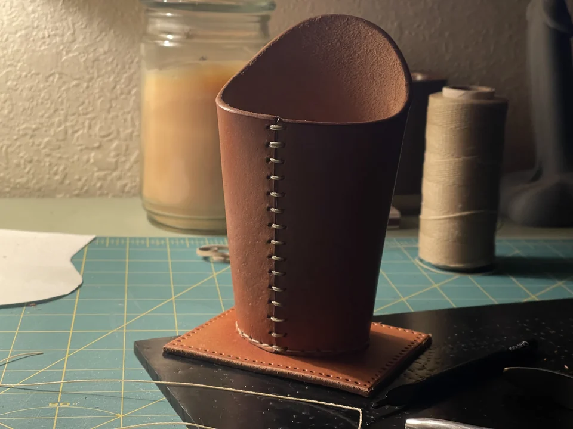
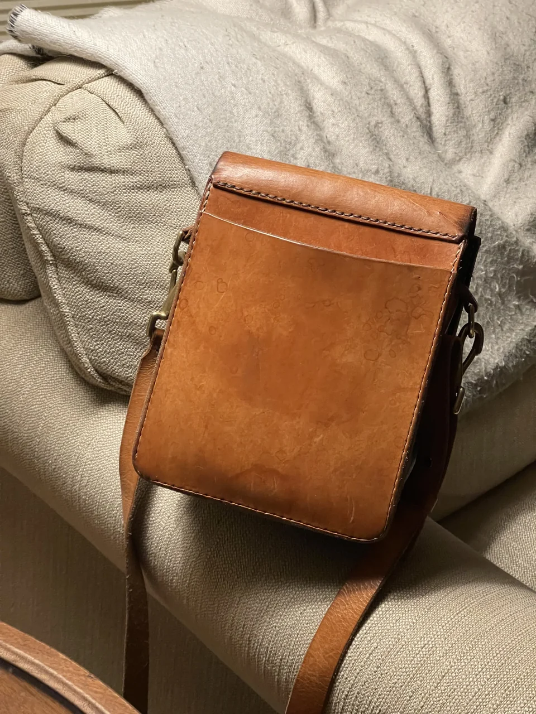
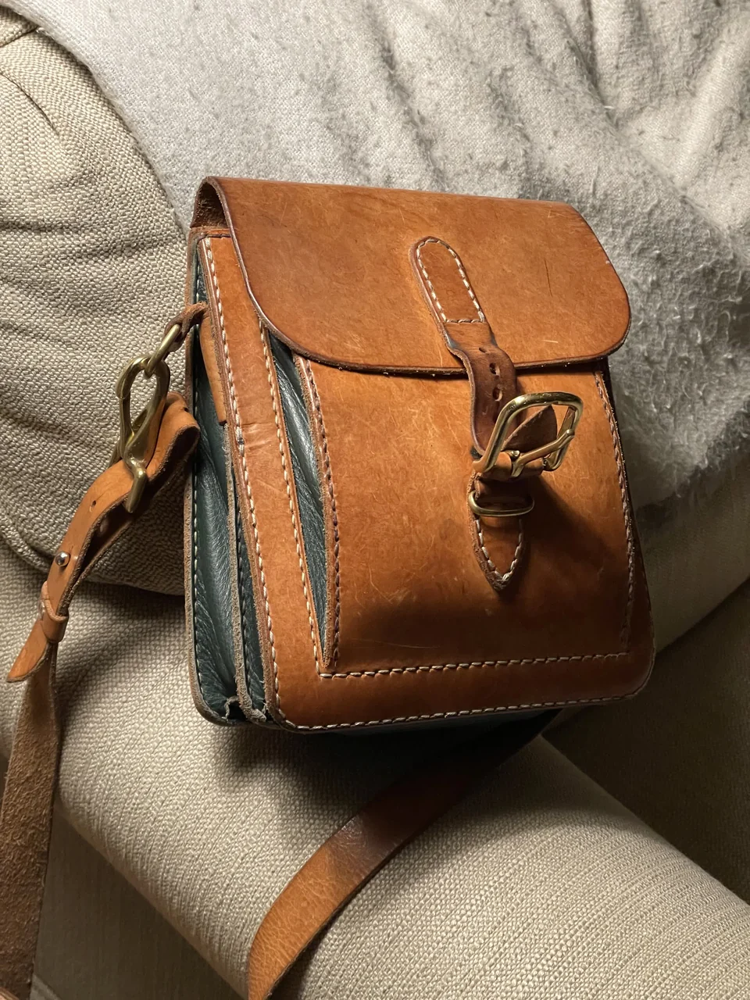
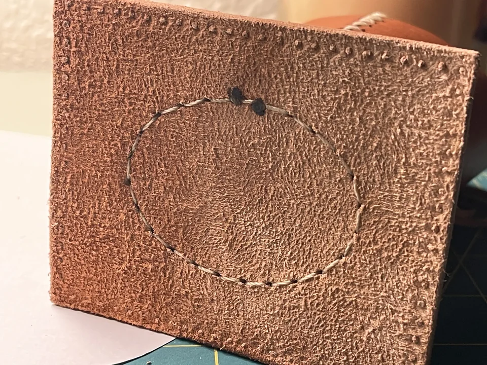
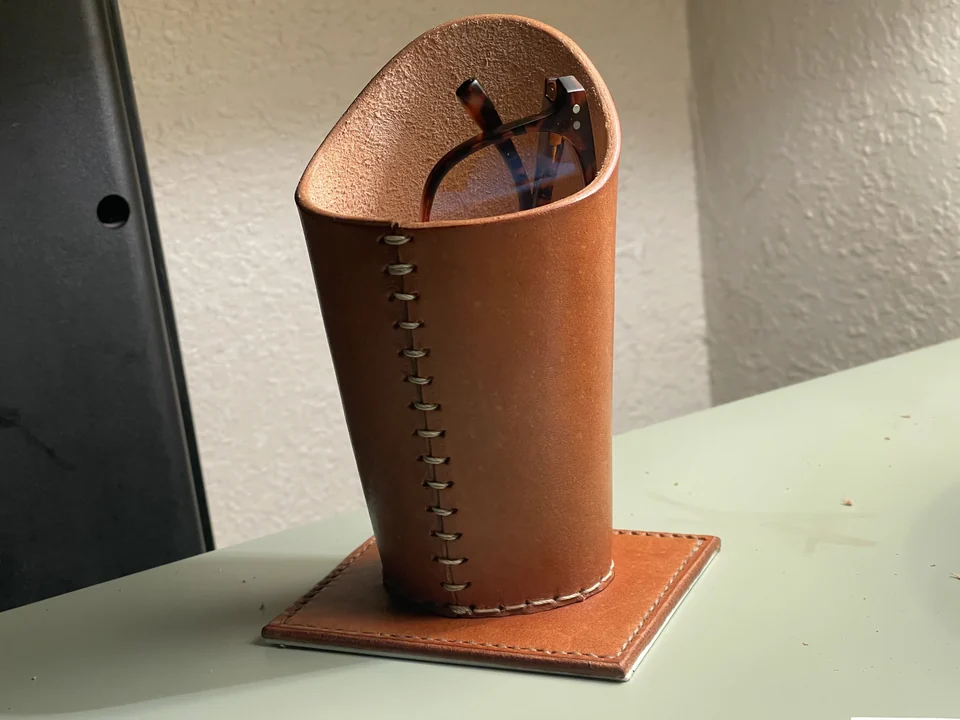

I made these leather pieces as gifts. I use Fusion 360 for patterns and printed tooling stencils, then cut, tool, and assemble the leather by hand.


Patterns and tooling
I draw the patterns in Fusion 360 so I can adjust their dimensions before cutting the leather.
For lettering, I clean up an SVG, import it into Fusion, and use a negative extrusion to make a printed stencil. I trace the lettering onto the leather before tooling it.
Purse for Mom
I made this satchel for my mom.


Eyeglass Holder
My mom sent me a reference photo after seeing a similar holder in an antique store. Years later, I finally made one for her. Patterning, cutting, tooling, and assembly took about two days.

